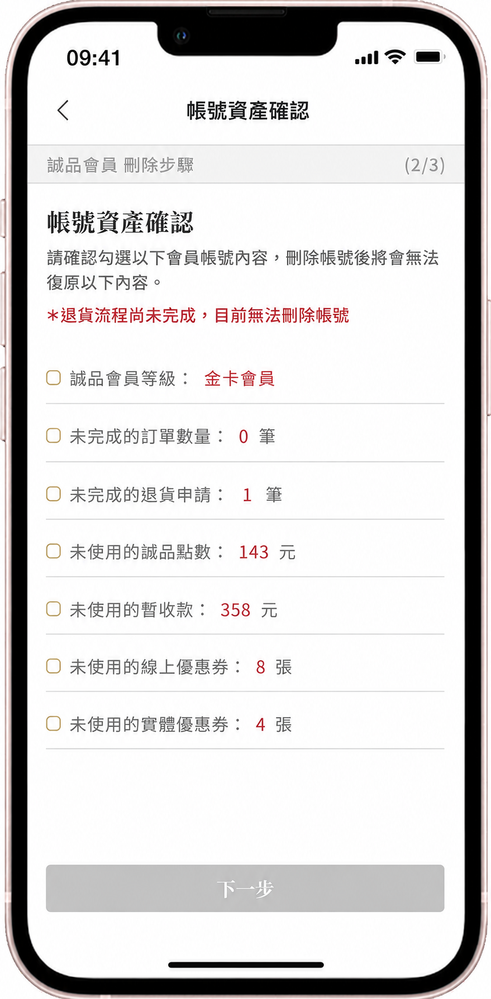
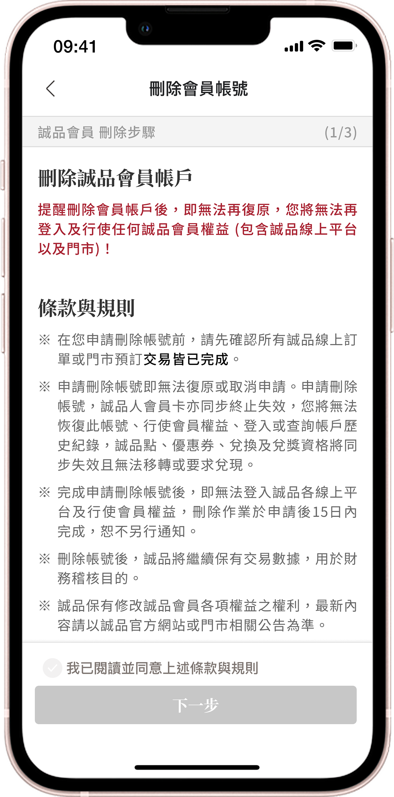
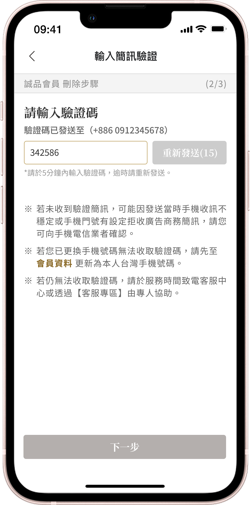
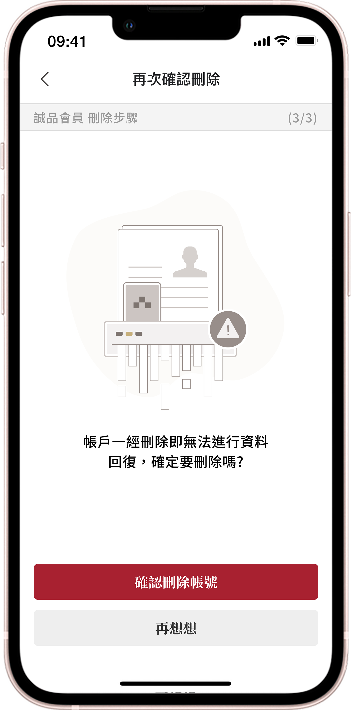
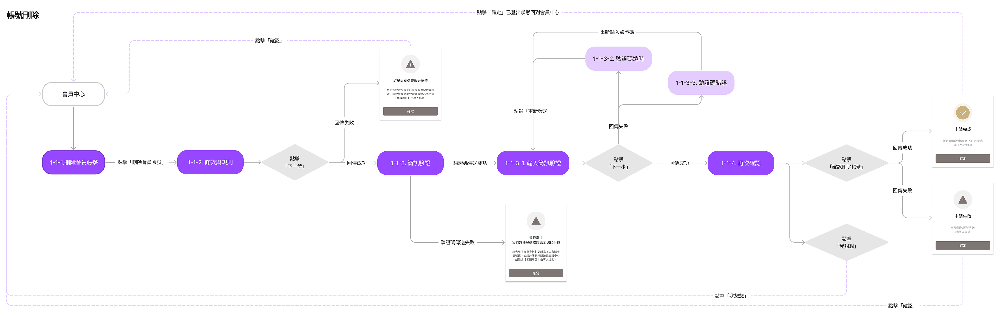

誠品線上 Eslite.com
Web & App
負責誠品線上 Web & App UIUX，在 400 萬+ 會員量級的開發環境下，主導 Design Ops 基礎建設，並在多項開發維運中平衡商業性與易用性體驗的功能落地。
誠品生活科技 · UI/UX Designer

產品背景
誠品線上 Eslite.com 線上線下會員人數超過 400 萬，不僅是大型綜合電商，更是全台最大文化實體零售的核心樞紐。然而在疫情影響下，全球電商呈現爆炸性成長；在百家爭鳴的新戰國時代，如何持續保有優勢成為重要課題。因此，關注國內外競品變化成為每日例行工作，一旦發現更好的體驗與機會點，便能及早調整。
我的角色與核心職責
獨立負責 Web & App 雙平台的 UI/UX，我的核心挑戰是在「高速的商業擴張需求」與「歷史技術債」中取得平衡。
敏捷交付
深度參與 Scrum 開發。在每個 Sprint 初期，主動與 PM 協商資訊架構的切分，在「新功能商業價值」與「技術債償還」之間進行資源分配與衡量。
端到端跨平台體驗設計
主導 Web / App 的設計。在大型功能開發前，透過競品洞察與 Lo-Fi Wireframe 向 PM 提案，確保不同裝置體驗一致性，同時達成商業增長目標。
零預算精實驗證
為降低開發錯誤成本，主動建立內部游擊測試機制。利用 High-fidelity Prototypes，鎖定非專案相關的內部 PM 與工程師進行盲測，以最低成本、最快速度完成開發前的體驗防呆與迭代。
商業現況 與 挑戰
- 每一位按下刪除的會員，都代表未來潛在營收的永久流失。
- 站在商業與 ROI 視角，公司必須盡可能建立防線，攔截衝動型退會。
- 會員對個人數據的掌控權意識高漲。
- 若刪除過程刻意刁難或不夠透明，不僅可能違反法規，更可能引發公關危機，導致品牌信任瓦解。
- 常規陷阱：多數產品僅將其視為「工程與客服」的待辦清單，提供一鍵刪除。
- 洞察定義：我將其重新定義為「商業留存防線：流失攔截點」。
產品策略・會員留存導向
商業意圖：透過系統撈取會員的「誠品點、會員等級、優惠券、暫收款項」，在最終決策點展示。利用損失厭惡（Loss Aversion）的心理學機制，創造決策猶豫的情境，目標是攔截衝動型退會，挽回潛在的客戶終身價值。

摩擦力流程設計
刻意拉長會員決策步驟，增加刪除帳號摩擦力。（密碼驗證 ＋ 刪除步驟，共 4 Step）
沈沒成本／損失厭惡
透過 API 撈取會員現有資產（點數、生日禮、等級），讓用戶逐一點擊 checkbox「確認放棄」。
安全和信任
設計上確保「資訊絕對透明」，不使用隱藏按鈕的 Dark Pattern，保障會員對品牌信任度。
設計機制・第一版流程


跨部門對齊與 MVP 衡量
風險控管：在與 PM 的會議中，我們共同評估了新流程的潛在風險：「若拉長步驟導致高齡會員操作卡關，可能轉而大量進線客服要求刪除，將導致『客訴處理成本』暴增。」因此，我們將設計策略從「資產挽留」轉向「防堵客訴」。
資源盤點與 MVP 決策：作為 UIUX 負責人，我在「挽回率」與「營運成本」之間做出衡量。在盤點開發團隊 Sprint 產能滿載的現況下，決議將「快速合規上線 與 極小化營運風險」置於體驗之上，採取最敏捷的交付策略。
最終交付開發方案
商業意圖：雖然拿掉了帳號資產展示，但流程改為「簡訊驗證」。三步驟的驗證流程同樣達到了「延遲衝動決策」的體驗效果，成功交付符合 iOS 規範且兼顧公司防禦性商業目標的產品。



APP 會員刪除功能・Function Flow
盤點包含 2FA 驗證超時、系統錯誤等 Edge Cases 的完整體驗邏輯，確保與 RD 開發認知對齊。

專案覆盤
- 0→1 建立 Design System：剛接手 Web & App 設計時，面臨軟體轉換且無統一元件庫的混亂期，導致跨頁面設計不一致與開發時程冗長。我主動重新配置時程，以漸進式推進的方式建立並模組化 UI 元件庫 — 不僅解決當下的維護痛點，更為未來的團隊擴編打下 Design Ops 的堅實基礎。
- 高壓環境下的優先級管理：面對唯一設計人力且 Web / App 雙線並行，經常會遇到緊急插件，容易導致專案衝突和需求遺漏。我使用 YouTrack 票務系統將設計工作「可視化」；當遇到緊急插單時，與主管 / PM 重新評估可行性與優先級，保護 Sprint 的交付品質。
- 設計與商業性的權衡：在誠品期間經手了無數的電商功能迭代。但在資源極度受限、技術債沈重的現實下，我認為 UIUX 的最高價值，不在於畫出多好看的介面，而在於「如何利用設計解決商業與營運的兩難」。